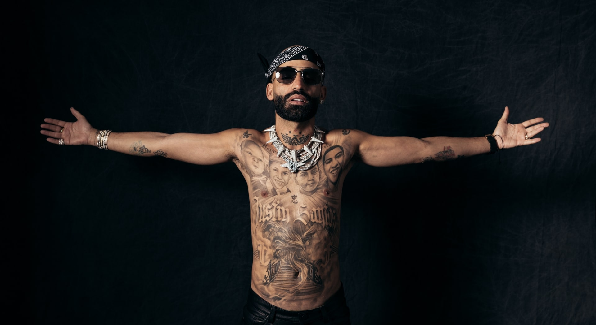

ARCANGEL
“Naciste para ser feliz, no para agradar a todo el mundo.”
CARRERA MUSICAL
2005-2006: Arcángel & De la Ghetto
Después de regresar a Puerto Rico en 2005, decidió seguir los pasos de la música reguetón. Pasó a formar parte de un dúo de reguetón, Arcángel & De la Ghetto con el cual lanzó su primera canción titulada «Traficando».
2007-2011: Inicios como solista y El fenómeno
Después de la separación del dúo a principios de 2007, siguió su carrera en solitario, trabajando con varios intérpretes y productores de reguetón en álbumes de compilación.
2012-2018: Sentimiento, elegancia & maldad y Ares
En 2012, formó parte Pina Records, y formó y participó del álbum La fórmula. «Me prefieres a mí», fue una canción de dicho álbum que ocupó los primeros puestos en América Latina, Europa y los Estados Unidos.[cita requerida] En 2013 lanzó su álbum de estudio Sentimiento, elegancia & maldad. Pasaron casi cuatro años para que lanzara su nuevo álbum el cual se compuso de dieciocho canciones que conformaron este nuevo trabajo discográfico entre las cuales se destacaron las colaboraciones con Daddy Yankee, De la Ghetto, Ñengo Flow, entre otros.[cita requerida] Lanzó el primer sencillo «Hace mucho tiempo», cuyo videoclip fue grabado en históricos escenarios del continente Europeo.

2019-2021: Historias de un capricornio, Los favoritos 2 y 2.5
En marzo de 2019, terminó contrato con Pina Records y lanzó de manera independiente la canción «Te esperaré».También participó en colaboraciones como «Si se da (remix)», "105F (remix)», entre muchas más. Además, dejó en el aire la posibilidad de firmar contrato con Warner Music para lanzar sus próximos trabajos; una posibilidad que se hizo realidad con el lanzamiento de su sencillo No hay amor, el cual forma parte de un mixtape antesala de la banda sonora original de la película Fast and Furious 9. En diciembre de ese año, lanzó su álbum de estudio Historias de un capricornio, el cual tiene colaboraciones con Bad Bunny, Ozuna, Myke Towers, Manuel Turizo, entre otros. El 16 de octubre de 2020, lanzó su álbum de estudio titulado Los favoritos 2, secuela de la primera parte en colaboración del productor DJ Luian pero sin la participación de este último. En septiembre de 2021, lanzó Los favoritos 2.5, una continuación del primer álbum lanzado un año antes, este contó con 15 sencillos y colaboraciones con artistas como Dalex, De la Ghetto, Farina, Jay Wheeler, Lenny Tavárez, Manuel Turizo, Miky Woodz, Nicky Jam, Zion & Lennox, Ken-Y, Juanka, entre otros. Al finalizar ese mismo mes, fue nominado por Billboard como el «álbum de la semana».
2022-presente: Sr. Santos
A fines de 2021, padeció el fallecimiento de su hermano Justin Santos, lo que provocó un cambio total en su carrera musical.Desde esa fecha hasta el 21 de noviembre de 2022, a un año exacto de la muerte de su hermano, lanzó «JS4E» en dedicación al mismo.Allí también enseño un tatuaje que se hizo en todo su torso en conmemoración a él. El 30 de noviembre del mismo año, lanzó el segundo sencillo de su futuro álbum de estudio Sr. Santos junto a Bad Bunny titulado «La Jumpa», una mezcla de house y drill. Asimismo, el 1 de diciembre, lanzó su séptimo álbum de estudio Sr. Santos, el cual contó con 18 sencillos y colaboraciones con artistas como Duki, Bizarrap, Bad Bunny, De la Ghetto, Myke Towers, Eladio Carrión, entre otros. El álbum se desempeñó principalmente en el género trap. El 22 de marzo de 2023 lanzó junto a Bizarrap «Arcángel: BZRP Music Sessions, Vol. 54».